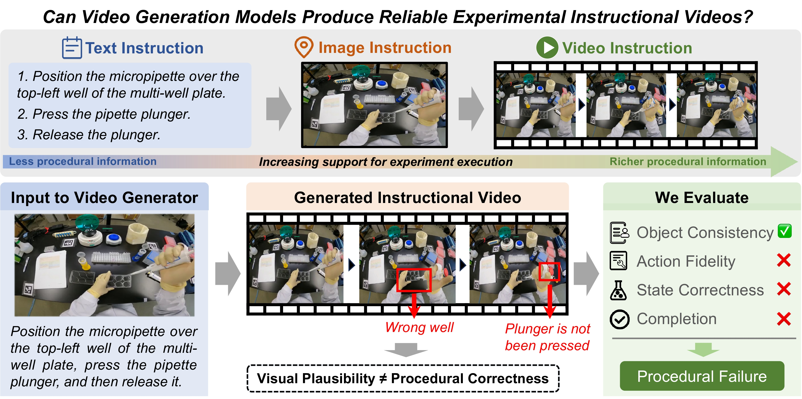

Examples
Model-generated previews. Select a task to inspect its instruction and reference clip. Reference clips are third-party recordings, shown for research and demonstration only — see the Copyright and Usage Notice.
Abstract
A frame + an instruction
A grounded starting scene and an explicit laboratory operation.
The procedure unfolds
Image-to-video models predict the actions and their visual consequences.
Check what actually happened
Task-specific questions assess actions, objects, and state changes.
From individual actions
to longer procedures
Level 1 covers single experimental steps; Level 2 covers short multi-step experimental tasks. Both span five scientific disciplines.
What we evaluate

Each generated video is scored against a human-verified, task-specific checklist of positively phrased, visually verifiable items. Items take one of three verdicts — Yes, No, or Unjudgeable — and every score is computed per video before aggregation.
- Core quality
- Object Consistency, Action Fidelity, State Correctness, and Physical Plausibility check that task-relevant objects keep their identity, that required actions run on the correct targets in order, that required state transitions are reached, and that interactions stay physically credible. A No or Unjudgeable is a violation, weighted by importance (Critical 1, Standard 0.5, Supplementary 0.25) and mapped by inverse decay 1/(1+V), so early violations hurt most.
- Critical completion
- Counts only the Critical items. The completion factor is 1 when every Critical item is Yes, 0.5 when exactly one is not, and 0 for two or more.
- Validity constraints
- Scene Consistency and Visual Safety are binary gates: any explicit No sets that video's Overall score to zero, while Unjudgeable alone does not. Gate items carry no weight, so a single No has veto power.
- Overall
- Soverall = Score × C(nc) × Gscene × Gsafety. Reported Core and Completion are means of the per-video values, Scene and Safety are gate validity rates, and Pooled Overall pools the per-video Overall scores across all 204 tasks.
Leaderboard
Visual realism does not guarantee procedural success.
GPT-5.6 Sol · 4 FPSHigher is better
Human evaluation
† Commercial models. Select a column heading to sort.
How to read the scores
Core combines Object Consistency, Action Fidelity, State Correctness, and Physical Plausibility using a geometric mean per video. Completion scores essential requirements; Scene and Safety report validity-gate pass rates.
Overall = Core × Completion × Scene gate × Safety gate, computed per video before averaging. Pooled Overall averages all 204 task scores, rather than taking an unweighted average of the two level scores. It is a completion-aware score, not a binary success rate.
Consensus
Tiers report the group, not the exact ordering: within a tier the order shifts slightly across the evaluation view, evaluator, sampling rate, and generation seed. The group itself holds, so models are ranked in each of the six views, the ranks averaged, and the two largest gaps split them into T0, T1, and T2.
Performance across laboratory settings
Explore how each model performs across scientific disciplines, operation domains, and recorded viewpoints.
Overall pools tasks within each category. Operation domains may overlap; task levels are independently curated.
Reference and model generations
Pick a task to see the recorded procedure and what each model generated.
Generation instruction
Copyright and Usage Notice
The videos displayed on this website are used solely for academic research and demonstration purposes. Copyright and related rights remain with their respective owners. We do not claim ownership of third-party video content, nor do we grant permission for its redistribution or commercial use.
If you are a copyright holder or authorized representative and believe that any content displayed on this website infringes your rights or should not be publicly displayed, please contact us at yumingfu@csu.edu.cn. Upon receiving a valid request, we will promptly review the matter and remove the relevant content where appropriate.
BibTeX
@misc{fu2026labinstruct,
title = {LabInstruct: Benchmarking Situated Instructional Video Generation for Lab Procedures},
author = {Yuming Fu and Weijia Wu and Jing Chen and Jiahao Tang and Feifei Chen and Hongyu Zhu and Xin Jin and Alex Jinpeng Wang},
year = {2026},
eprint = {XXXX.XXXXX},
archivePrefix = {arXiv},
primaryClass = {cs.CV},
url = {https://arxiv.org/abs/XXXX.XXXXX}
}